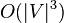
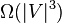
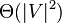
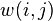
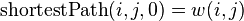
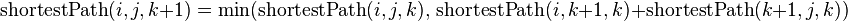
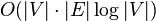
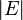
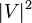

Алгоритм Флойда — Воршелла[ред. • ред. код]
| Клас | Задача про найкоротший шлях (для зважених графів) |
|---|---|
| Структура даних | Граф |
| Найгірша швидкодія |  |
| Найкраща швидкодія |  |
| Просторова складність у найгіршому випадку |  |
В комп'ютерних науках, алгоритм Флойда-Воршелла використовується для вирішення задачі про найкоротший шлях у зваженому графі з додатними або від'ємними вагами ребер(але без від'ємннозначних циклів).[1][2]При звичайній реалізації алгоритм видасть довжини (сумарні ваги) найкоротших шляхів між всіма парами вершин, хоча він не поверне інформацію про самі шляхи.Різні версії алгоритму також використовуються для знаходження транзитивного замикання в відношенні, або (враховуючи Метод Шульце), для знаходження найбільшого шляху(англ. widest path problem) між всіма парами вершин у зваженому графі.
Зміст
[сховати]Історія і назва[ред. • ред. код]
Алгоритм Флойда-Воршала - це приклад динамічного програмування. Він був опублікований у звичній сьогодні формі Робертом Флойдом у 1962.[3]Проте, це практично той же алгоритм, що був опублікований Бернардом Роєм у 1959[4]і Стефаном Маршалом у 1962[5]для знаодження транзитивного замикання в графі,,[6]і є досить тісно пов'язаним з алгоритмом Кліні(опублікованим у 1956)для перетворення детермінованих скінченних автоматів у регулярні вирази.[7]Сучасне формулювання алгоритму, як трьох вкладених циклів було вперше подано Пітером Інгерманом у 1962.[8]
Алгоритм також називають Алгоритм Флойда, Алгоритм Роя-Воршала, Алгоритм Роя-Флойда, абоАлгоритм WFI.
Алгоритм[ред. • ред. код]
Алгоритм Воршала порівнює всі можливі шляхи в графі між кожною парою вершин. Він виконується вΘ(|V |3)порівнянь. Це доволі примітивно, враховуючи , що в графі може бути до Ω(|V |2) ребер, і кожну комбінацію буде протестовано.Він виконує це шляхом поступового поліпшення оцінки по найкоротшому шляху між двома вершинами, поки оцінка не є оптимальною.
Розглянемо граф G з ребрами V, пронумерованими від 1 до N. Крім того розглянемо функцію shortestPath(i, j, k), яка повертає найкоротший шлях від i до j, використовуючи вершини з множини {1,2,...,k} як внутрішні у шляху.Тепер, маючи таку функцію нам потрібно знайти найкоротший шлях від кожного i до кожного j, використовуючи тільки вершини від 1 до k + 1.
Для кожної з цих пар вершин, найкоротший шлях може бути або (1)- шлях, у якому є тільки вершини з множини {1, ..., k}, або (2)- шлях, який проходить від i до k + 1 а потім відk + 1 до j.Найкоротший шлях від i to j that only uses vertices 1 через k визначається функцією shortestPath(i, j, k),і якщо є коротший шлях відi до (k + 1 до j),то довжина цього шляху буде сумою(конкатенацією) найкоротшого шляху відi до k + 1 (використовуючи вершини{1, ..., k}) і найкоротший шлях від k + 1 до j (також використовуючи вершини з {1, ..., k}).
 - це вага ребра між i таj.Можна визначити shortestPath(i, j, k + 1) наступною рекурсивною формулою база:
- 
рекурсивна частина:
- 
Ця формула є основною частиною алгоритму Флойда-Воршала.Алгоритм спочатку обчислює shortestPath(i, j, k) для всіх пар(i, j) де k = 1, потім k = 2, і т.д. Цей процес продовжується, поки k = N, і поки не знайдено всі найкоротші шляхи для пар (i, j). Псевдокод для цієї версії алгоритму:
1 let dist be a |V| × |V| array of minimum distances initialized to ∞ (infinity) 2 for each vertex v 3 dist[v][v] ← 0 4 for each edge (u,v) 5 dist[u][v] ← w(u,v) // the weight of the edge (u,v) 6 for k from 1 to |V| 7 for i from 1 to |V| 8 for j from 1 to |V| 9 if dist[i][j] > dist[i][k] + dist[k][j] 10 dist[i][j] ← dist[i][k] + dist[k][j] 11 end if
Приклад[ред. • ред. код]
Алгоритм виконується на малюнку нижче:
{kind=link}
Перед першою ітерацією циклу k=0 і відомі шляхи відповідають одиночним ребрам у графі. Коли k=1, знайдено шляхи, яку проходять через вершину 1, зокрема: шлях 2→1→3 , замінить шлях 2→3, що проходить через меншу кількість ребер, але є довшим. При k=2, знаходяться шляхи, що проходять через вершини {1,2} . Червоні і голубі квадратики показують, як шлях 4→2→1→3 складається з 4→2 і 2→1→3, визначеними на попередніх ітераціях. Шлях 4→2→3 не розглядається , бо 2→1→3 поки що найкоротший шлях. При k=3,знаходяться шляхи, що проходять через {1,2,3} . Нарешті, при k=4, знайдено всі найкоротші шляхи.
При негативних циклах[ред. • ред. код]
Негативний цикл- це цикл, в якому сума всіх ребер є меншою нуля. Немає найкоротшого шляху між парами вершин i, j, між якими є негативні ребра, бо шлях між ними тоді може бути нескінченно малий.Для нормального результату , алгоритм Флойда передбачає відсутність негативних циклів.Тим не менш, якщо є негативні цикли, алгоритм Флойда-Воршалла може бути використаний, щоб виявити їх. Інтуїтивно це таким чином:
- Алгоритм Флойда-Воршалла багаторазово змінює довжини шляху між усіма парами вершин (i, j), включаючи ті, де i = j;
- Спочатку довжина шляху (i,i) =0;
- Шлях {(i,k), (k,i)} може тільки поліпшити це, якщо він має довжину менше, ніж нуль, тобто позначає негативний цикл;
- Таким чином, після виконання алгоритму,шлях (i,i) буде негативним, якщо існує шлях негативної довжини від i назад до i.
Отже, для виявлення негативних циклів з використанням алгоритму Флойда-Воршалла, можна перевірити діагональ матриці шляхів, і присутність негативного числа означає, що графік містить, щонайменше, один негативний цикл.[9] Щоб уникнути проблем, потрібно у внутрішньому циклі перевіряти діагональ матриці шляхів.[10]Очевидно, що в неорієнтованому графі негативне ребро створює негативний цикл за участю інцидентних вершин. Якщо враховувати попередній приклад, як неорієнтований граф, то послідовність ребер 4 - 2 - 4 утворюють цикл довжини -2.
Знаходження шляху[ред. • ред. код]
Алгоритм Флойда-Воршалла зазвичай знаходить тільки довжину шляху між усіма парами вершин. За допомогою простих змін, можна створити функцію для відновлення фактичного шляху між будь-якими двома кінцевими точками вершин. І хоча хтось може схилятись до ідеї зберігання шляху від кожної вершини до кожної вершини, це не обов’язково, і насправді дуже витратно щодо пам’яті. Натомість дерево найкоротших шляхів[en] може бути обчисленим для кожної вершини за час Θ(|E|) використовуючи Θ(|V|) пам’яті для збереження кожного дерева, що дозволить ефективно відтворити шлях між будь-якими двома з’єднаними вершинами.
let dist be a |V| × |V| array of minimum distances initialized to ∞ (infinity)
let next be a |V| × |V| array of vertex indices initialized to null
procedure FloydWarshallWithPathReconstruction ()
for each edge (u,v)
dist[u][v] ← w(u,v) // the weight of the edge (u,v)
next[u][v] ← v
for k from 1 to |V| // standard Floyd-Warshall implementation
for i from 1 to |V|
for j from 1 to |V|
if dist[i][k] + dist[k][j] < dist[i][j] then
dist[i][j] ← dist[i][k] + dist[k][j]
next[i][j] ← next[i][k]
procedure Path(u, v)
if next[u][v] = null then
return []
path = [u]
while u ≠ v
u ← next[u][v]
path.append(u)
return path
Аналіз[ред. • ред. код]
Нехай |V|= n- кількість вершин. Щоб знайти усі n2 з shortestPath(i,j,k) (для всіх i та j) з даного shortestPath(i,j,k−1) потрібно 2n2 операцій. Ми починаємо з shortestPath(i,j,0) = edgeCost(i,j) рахуємо послідовність n матриць shortestPath(i,j,1), shortestPath(i,j,2), …, shortestPath(i,j,n), кількість операцій = n · 2n2 = 2n3. ому, складність алгоритму = Θ(n3).
Додатки[ред. • ред. код]
Алгоритм Флойда-Воршала можна використовувати для вирішення таких задач:
- Знаходження найкоротших шляхів у напрямленому графі .
- Знаходження транзитивних замикань і напрямленому графі. В оригінальному формулюванні (Воршала), граф ж незважений і представлений булевою матрицею. Операції дадовання і мінімуму замінені на логічні AND i OR.
- Знаходження регулярних виразів, що позначають регулярні граматики, які приймаються скінченним автоматом(Алгоритм Кліні),близько зв'язане з алгоритмом Флойда-Воршала[11]
- невиродженість матриці в методі Гауса[12]
- Оптимальна маршрутизація. Коли потрібно знайти максимальний потік між двома вершинами.
- Швидкі обрахунки у Pathfinder network.
- Знаходження найдовшого шляху.
Реалізація[ред. • ред. код]
Реалізація алгоритму доступна багатьма мовами:
- C++, в бібліотеці boost::graph
- C#, в QuickGraph
- Java, у бібліотеці Apache Commons Graph
- MATLAB, у пакеті Matlab_bgl
- Perl,в модулі Graph
- Python, в бібліотеці NetworkX
- R, в пакеті e1071
Порівняння з іншими алгоритмами[ред. • ред. код]
Алгоритм Флойда-Воршалла є хорошим для обчислення шляху між усіма парами вершин в щільних графах, в яких більшість або всі пари вершин, з'єднані ребрами.Для розріджених графів з невід'ємними вагами ребер, найкраще використовувати алгоритм Дейкстри від кожної можливої вихідної вершини, оскільки складність Дейкстри( використовуючи binary heap) є кращою, ніж - складність алгоритму Флойда_Воршала, коли  набагато менше від .Для розріджених графів з негативними ребрами, але без негативних циклів, алгоритм Джонсона може бути використаний, з тим же асимптотичним часом роботи в якості повторювання підходу Дейкстри.
Є також відомий алгоритм , що використовує швидке множення матриць для покращення процесу пошуку найкоротшого шляху в щільних графах. Проте тут робиться додаткове обмеження на ваги ребер(вони повинні біти малими цілими).[13][14]
Посилання[ред. • ред. код]
- Вгору ↑ Томас Кормен; Чарльз Лейзерсон, Рональд Рівест (1990). Вступ в алгоритми (вид. 1st). MIT Press і McGraw-Hill. ISBN 0-262-03141-8. Секція 26.2, "The Floyd–Warshall algorithm", ст. 558–565 та сек3ція 26.4, "A general framework for solving path problems in directed graphs", ст. 570–576.
- Вгору ↑ Kenneth H. Rosen (2003). Discrete Mathematics and Its Applications, 5th Edition. Addison Wesley. ISBN 0-07-119881-4.
- Вгору ↑ Floyd, Robert W. (June 1962). Algorithm 97: Shortest Path. Communications of the ACM 5 (6). с. 345. doi:10.1145/367766.368168.
- Вгору ↑ Roy, Bernard (1959). Transitivité et connexité.. C. R. Acad. Sci. Paris 249. с. 216–218.
- Вгору ↑ Warshall, Stephen (January 1962). A theorem on Boolean matrices. Journal of the ACM 9 (1). с. 11–12. doi:10.1145/321105.321107.
- Вгору ↑ Weisstein, Eric W. Floyd-Warshall Algorithm(англ.) на сайті Wolfram MathWorld.
- Вгору ↑ Kleene, S. C. (1956). Representation of events in nerve nets and finite automata. У C. E. Shannon and J. McCarthy. Automata Studies. Princeton University Press. с. 3–42.
- Вгору ↑ Ingerman, Peter Z. (November 1962). Algorithm 141: Path Matrix. Communications of the ACM 5 (11). с. 556. doi:10.1145/368996.369016.
- Вгору ↑ Dorit Hochbaum (2014). Section 8.9: Floyd-Warshall algorithm for all pairs shortest paths (PDF). Lecture Notes for IEOR 266: Graph Algorithms and Network Flows. Department of Industrial Engineering and Operations Research, University of California, Berkeley.
- Вгору ↑ Stefan Hougardy (April 2010). The Floyd–Warshall algorithm on graphs with negative cycles. Information Processing Letters 110 (8-9). с. 279–281. doi:10.1016/j.ipl.2010.02.001.
- Вгору ↑ Gross, Jonathan L.; Yellen, Jay (2003). Handbook of Graph Theory. Discrete Mathematics and Its Applications. CRC Press. с. 65. ISBN 9780203490204..
- Вгору ↑ Penaloza, Rafael. Algebraic Structures for Transitive Closure.
- Вгору ↑ Zwick, Uri (May 2002). All pairs shortest paths using bridging sets and rectangular matrix multiplication. Journal of the ACM 49 (3): 289–317. doi:10.1145/567112.567114..
- Вгору ↑ Chan, Timothy M. (January 2010). More algorithms for all-pairs shortest paths in weighted graphs. SIAM Journal on Computing 39 (5): 2075–2089. doi:10.1137/08071990x..